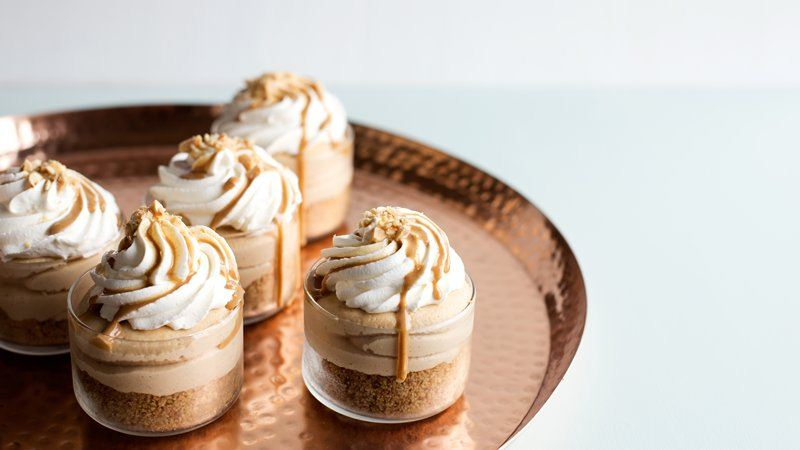

<!--
 Name:Neville Zou
 Student Id:
-->
<div class="pages">
<div data-page="projects" class="page no-toolbar no-navbar">
   <div class="page-content">
         <!--top header-->
      <div class="navbarpages">
         <div class="nav_left_logo"><a href="index.html"></a></div>
         <div class="nav_right_button">
		 <!--A link to Open Main Nav-->
            <a href="menu.html"></a>
			<!--A link to go back to Previous Page-->
            <a href="food-menu.html"></a>
         </div>
      </div>
	   <!--top header-->
      <div id="pages_maincontent">
        <h2 class="page_title">Our Recepie</h2><!-- the header information of the page -->
         <div class="post_single">
		  <!--Recipe Image And title-->
            <div class="featured_image">
               <!-- image tag for diplay image in browser-->
               <div class="post_title_single">
                  <h2>No-Bake Peanut Butter Cheesecakes</h2>
               </div>
               <div class="post_social">
                  <a href="#" data-popup=".popup-social" class="open-popup"></a>              
               </div>
            </div>
			 <!--Recipe Image And title-->
			 <!--Recipe Detail-->
            <div class="page_content">
               <div class="entry">
                  <p>
                     Peanut butter lovers rejoice! These easy no-bake cheesecakes are quick to make, and guaranteed to please.
                  </p><!-- starts new paregraph-->
                  <ul class="simple_list"><!-- unorderlist tag-->
                     <li> In medium bowl, mix crushed crackers, coconut oil and brown sugar. Divide mixture among 6 (6 oz) ramekins, pressing mixture in bottom and partly up sides using a small glass (a shot glass is perfect for this).</li><!--LIst items-->
                     <li>In large bowl, beat cream cheese with electric mixer on high speed until light and creamy. Beat in peanut butter and condensed milk until combined. Pipe or spoon mixture into crust-lined ramekins. Cover ramekins with plastic wrap; refrigerate about 2 hours to set. Serve with remaining ingredients.</li>
                  </ul>
               </div>
            </div>
			<!--Recipe Detail-->
         </div>
      </div>
   </div>
</div>